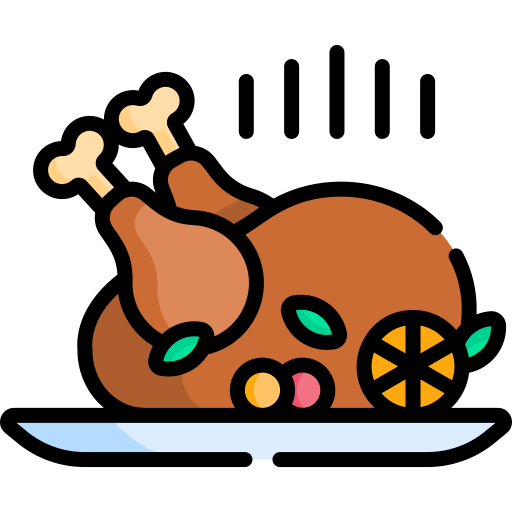

O que é?
Traduzindo para o português, o Thanksgiving Day é o Dia de Ação de Graças, sendo o principal feriado das famílias
norte-americanas, celebrado com o intuito de agradecer a Deus pelos bons acontecimentos, pelas bênçãos do ano. Nos Estados Unidos,
assim como abordado, o Dia de Ação de Graças é celebrado em família, sendo assim, é comum que as pessoas viajem para se reunir com
seus familiares.
Sua origem veio com as comemorações de fartura das colheitas, sendo realizadas no outono do hemisfério norte, logo,
no final de novembro. Diferente de outras datas comemorativas ao redor do mundo, essa em particular não possui uma data fixa, já que é
celebrada na última quinta-feira de novembro. Em 1863, o presidente da época, Abraham Lincoln, decretou oficialmente que a quarta quinta-feira
de novembro seria o Dia de Ação de Graças, então, a data passou a ser feriado nacional nos Estados Unidos, a partir do ano de 1941.
Uma curiosidade, é que após este dia festivo, ocorre um outro evento, chamado Black Friday, em que as lojas oferecem descontos
vantajosos para os seus consumidores.
Como ocorreu?
Começando a análise pelo registro histórico desta data, o Dia de Ação de Graças aconteceu pela primeira vez nos Estados Unidos no
ano de 1621, em Plymouth, Massachusetts, onde a festa foi organizada por peregrinos (aquele que faz longas viagens) e fundadores da vila, para que
fosse comemorado o fim do período do inverno e, também, como uma forma de celebrar a boa colheita de milho.
No Canadá, a comemoração teve início em 1578, que além da ocasião de agradecimento, é uma data de celebração pela chegada do inglês
Martin Frobisher, que foi um marinheiro britânico que reivindicou o Canadá para a coroa da Inglaterra, em terra firme. Em ambos países, o feriado possui
o mesmo intuito de expressar gratidão pela fartura das colheitas agrícolas.
Mesmo que o Thanksgiving seja festejado com diversidade de pratos e comidas típicas, em sua origem os pratos eram assados e cozidos,
feitos à base de milho. Em 1966, a lei 5110 foi estabelecida, em que a comemoração do Thanksgiving se daria na quarta quinta-feira de novembro.
O que se come no dia de Ação de Graças?
É celebrado com pratos típicos feitos à base de abóbora, batata-doce, purê de batas, molho de cranberry, conhecido como mirtilo no Brasil,
e o tradicional peru, além dos cookies e torta de maçã e nozes, o Thanksgiving é comemorado com um jantar.

The Turkey
Cerca de 50 milhões de perus são consumidos no Dia de Ação de Graças nos Estados Unidos, sendo um dos motivos pelo qual a data é conhecida como “Turkey Day” (Dia do Peru). Sendo assim, anualmente o presidente dos Estados Unidos participa de uma cerimônia que “perdoa” dois perus, ou seja, os poupando do abate.
⇡
E no Brasil?
O principal motivo pela falta de comemoração do Dia de Ação de Graças no Brasil é justificado pelo contexto histórico.
Como o Brasil for colonizado por Portugal, e não pela Inglaterra, a maioria dos costumes e celebrações vieram da cultura portuguesa,
juntamente com as influências africanas e indígenas.
Ainda assim, apesar de não ser uma comemoração usual, a data foi regulamentada no calendário nacional em 1949, pelo presidente
Eurico Gaspar Dutra. Em 1965, o presidente Castello Branco definiu que a celebração seria no mesmo dia que nos Estados Unidos.
Comparações
Apesar de ser uma data com significado contrário ao dia de Ação de Graças, ele é muito assemelhado com o Natal no Brasil, por
conta da Ceia, que é realizada na véspera, no dia 24 de dezembro.
O Natal, celebrado dia 25 de dezembro, comemora o nascimento de Jesus Cristo, a figura mais importante do Cristianismo. Por esse
motivo, é considerada, pelos cristãos, uma das principais datas comemorativas, juntamente a Páscoa, em que é celebrado a ressurreição de Jesus.
Sendo assim, um feriado religioso em muitos locais do mundo.